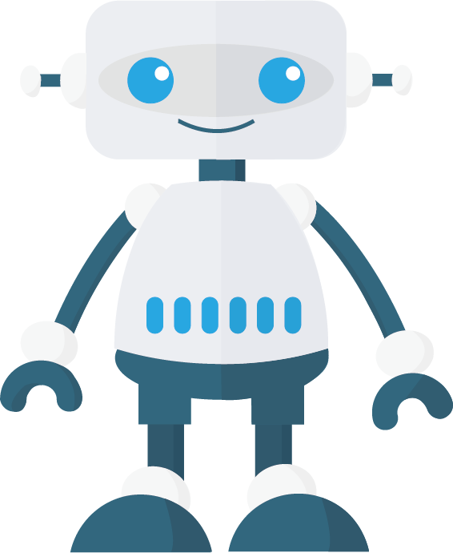

<ion-view title="Derine" hide-back-button="true" id="page1">
  <ion-content padding="false" style="background: url(img/001.png) no-repeat center;background-size:cover;" class="has-header" scroll="false">
    
    <!-- Derine本人 -->
    
    <!-- Derine回應文字 -->
    <div id="spokenResponse" class="mwt_border spoken-response">
        <span class="arrow_l_out"></span>
        <div id="spoken-response__text" class="spoken-response__text">哈囉{使用者暱稱}，我是Derine!</div>
    </div>    
    <!-- 地圖功能 -->
    <div id="mymap"></div>
    <div id="place-details"></div>
    <!-- 影片功能 -->
    <div id="muteYouTubeVideoPlayer"></div>
    <!-- 語音按鈕 -->
    <div class="menu-img"></div>
      <button id="fab" class="pulse animated infinite" href="#"></button>
    </div>
    <div class="loaderBox">
      <div class="loader"></div><br>
      <div class="loaderText">語音辨識中</div>
      <p>請靠近麥克風說話</p>
    </div>
    <!-- 文字輸入 -->
    <div class="list"></div>
      <div id="derine_text" class="item item-input-inset">
        <label class="item-input-wrapper">
          <input id="speech" type="text" placeholder="文字輸入 or 按鈕發話...">
        </label>
        <button id="btnSend" class="button button-small">送出</button>
      </div>
    </div>    
  </ion-content>
</ion-view>